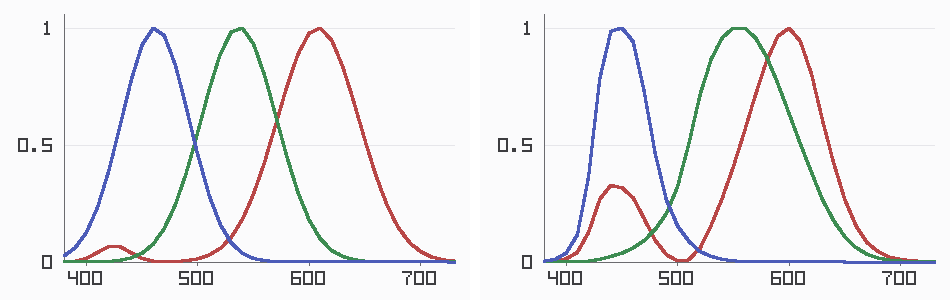
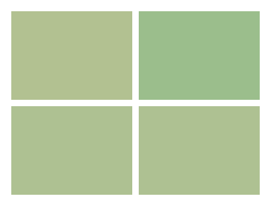
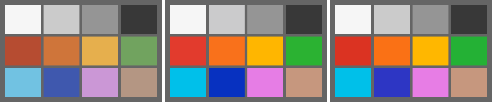

Since Chapter 1, every color figure in this book has carried the same disclosed mislabel: camera RGB displayed as if it were sRGB. The pictures were useful anyway — casts and mosaics show up fine under a wrong label — but the colors themselves have never been right, and you can see it in any of those figures once you know to look: muted blues, dusky magentas, a general politeness that real scenes don’t have. This chapter ends the mislabel. It explains what a color space is, why the sensor’s RGB isn’t one, and how to build the 3x3 matrix that carries the image into CIE XYZ — the space where color claims can be checked against a standard observer rather than against vibes.
5.1Why camera RGB is not a color space
A color space, in the useful sense, is a coordinate system with a known relationship to human vision — to the CIE standard observer, the trio of curves \(\bar{x}, \bar{y}, \bar{z}\) that predict when two spectra will look alike to a person. sRGB qualifies: its three numbers are defined by a fixed transform from XYZ, so an sRGB triple means something about appearance. Camera RGB has no such relationship. Its three numbers mean “what our particular dyes caught,” and nothing more:

If the sensor’s curves were exact linear combinations of the observer’s — that is, if each camera curve could be rebuilt by adding up scaled copies of the three human curves with nothing left over — camera RGB would be a color space outright, and one matrix would convert it to XYZ without error. (That requirement has a name: the Luther–Ives condition.) No consumer camera satisfies the condition, ours included, because dyes that satisfy it are noisy, expensive, and unstable, and manufacturers sensibly prefer dyes that capture light well. The gap has a sharp consequence, worth demonstrating rather than asserting. Two different spectra can produce identical camera responses while looking different to a person. We can manufacture such a pair to order — four narrow spectral bumps, three coefficients solved (with the small Gaussian-elimination solver the book now carries in pxp.linalg) so the camera’s D65 response to the difference is zero in every channel:

That figure is the chapter’s boundary stone. Whatever we build next can reduce the disagreement between camera and observer; it cannot eliminate a difference the sensor never recorded. The caption’s measuring stick also deserves an introduction, because every verdict in this chapter is denominated in it. ΔE is distance in CIELAB — the space that bends XYZ (a cube root does most of the work: xyz_to_lab, now in pxp.color) until equal distances read as roughly equal perceived differences — and the bend is the whole trick, because once inside, measuring a color difference is nothing but geometry:
code/pxp/color.pydef delta_e(lab1, lab2):
"""Color difference as straight CIELAB distance — the original
1976 formula. Later refinements (CIEDE2000) weight the axes more
carefully; this book keeps the simple one and says so. Rule of
thumb: around 1 is a just-noticeable difference, 5 is plainly
visible, 20 is a different color."""
return ((lab1[0] - lab2[0]) ** 2 + (lab1[1] - lab2[1]) ** 2
+ (lab1[2] - lab2[2]) ** 2) ** 0.5
5.2The matrix, fitted like a lab would
The industry’s answer to the gap is modest and effective: find the 3x3 matrix that maps camera RGB onto XYZ as well as possible, accepting the residual. “As well as possible” is decided the way a profiling lab decides it — photograph a chart whose true colors are known, and fit:
code/pxp/colormatrix.pydef training_pairs(light):
"""One (camera RGB, true XYZ) pair per chart patch, both sides
anchored to a perfect white under the same light: the camera
side is white-balanced and scaled so a perfect reflector reads
green = 1, the XYZ side scaled so it reads Y = 1."""
gains = whitebalance.reference_gains(light)
camera_white = whitebalance.neutral_response(light)[1] * gains[1]
xyz_white = color.xyz(light)[1]
pairs = []
for _, reflectance in color_chart():
radiance = reflectance.lit_by(light)
response = whitebalance.neutral_response(radiance)
camera = [r * g / camera_white
for r, g in zip(response, gains)]
truth = [v / xyz_white for v in color.xyz(radiance)]
pairs.append((camera, truth))
return pairs
Both sides are anchored to a perfect white so the matrix carries color, not brightness. And here the simulator’s spectral design pays its largest dividend: the “known true colors” are computed from the same reflectance formulas the scene is made of, so the fit below is a genuine estimation with a genuine residual — not a lookup of an answer hidden in the data. The fit itself is least squares, and the name states the goal exactly. We have twelve patches to satisfy but only nine numbers to choose — a 3x3 matrix — so no matrix can land every patch dead-on. Least squares picks the one that makes the total miss smallest: add up, over all twelve patches, the squared distance between where the matrix sends the camera’s reading and where the true color actually sits, and choose the matrix that minimizes that sum. Squaring is what makes it work — it counts overshoot and undershoot alike, leans harder on large misses than small ones, and collapses the whole thing into a small system of equations the tiny solver can crack directly. It is the best-fit line a spreadsheet draws through scattered points, lifted from two dimensions to nine. Three unknowns per XYZ row, solved one row at a time:
code/pxp/colormatrix.pydef derive_matrix(light):
"""Fit the 3x3 camera-to-XYZ matrix by least squares over the
chart: three independent fits, one per XYZ component, each a
three-unknown normal-equations system for our tiny solver.
Twelve patches, nine unknowns — an overdetermined fit whose
leftover error is the subject of section 5.2: no 3x3 can be
exact, because the camera and the eye disagree about which
spectra match."""
pairs = training_pairs(light)
normal = [[0.0] * 3 for _ in range(3)]
moments = [[0.0] * 3 for _ in range(3)] # one row per X/Y/Z
for camera, truth in pairs:
for i in range(3):
for j in range(3):
normal[i][j] += camera[i] * camera[j]
for t in range(3):
moments[t][i] += camera[i] * truth[t]
return [linalg.solve(normal, moments[t]) for t in range(3)]
For our sensor under D65, the fitted matrix comes out as:
X 0.685 0.122 0.143
Y 0.301 0.767 -0.068
Z 0.043 -0.168 1.216
Read it as a story about the filters. The diagonal dominates — camera red mostly is X-flavored, and so on — which is the resemblance from Figure 5.1 doing its work. The off-diagonal terms are the corrections, and the Z row’s -0.168 is our red filter’s blue leak being actively subtracted back out: the matrix found the flaw in the dyes and compensated, from chart data alone, with nobody telling it the leak existed. Note also what nobody constrained: the rows sum to (0.950, 1.000, 1.091), which is the D65 white point to three decimals. Four neutral patches in the training chart were enough to teach the matrix to leave gray alone. Production profiling tools do pin that constraint explicitly; our fit gets it nearly free, and the test suite checks it stays that way.
The residual, patch by patch, in ΔE against the spectral truth:
| Patch | ΔE | Patch | ΔE | |
|---|---|---|---|---|
| white | 0.17 | red | 3.55 | |
| gray-60 | 0.15 | orange | 1.59 | |
| gray-30 | 0.12 | yellow | 5.53 | |
| black | 0.06 | leaf-green | 1.83 | |
| skin | 0.14 | cyan | 2.15 | |
| magenta | 0.49 | blue | 3.41 |
Mean 1.60, worst 5.53. The neutrals and skin are essentially perfect; the saturated patches carry the error, because saturated colors are exactly where the camera’s curves and the observer’s diverge most. For comparison, the mislabel this book has been living with scores a mean ΔE of 18.45 on the same chart — the matrix buys back an order of magnitude, and the test suite holds that ratio. What it cannot buy back is Figure 5.2: the residual is not a fitting failure to be engineered away with more patches or cleverer regression, it is camera metamerism surfacing as arithmetic. A 3x3 is a projection between two three-dimensional shadows of an infinite-dimensional world, and the shadows genuinely differ.

5.3XYZ to the screen
XYZ is where color science happens, and no monitor speaks it. The last step is into a display space, and this book’s display space is sRGB: three defined primaries, a defined white point, and a transfer curve (that curve is Chapter 7’s business; here we stay linear). Since Chapter 1, pxp.color has carried the XYZ-to-sRGB matrix as a constant used on faith. The standard defines the primaries and white only as chromaticities — and that is enough to derive the matrix, with the same small solver:
code/pxp/colormatrix.pydef derive_srgb_matrix():
"""The XYZ-to-linear-sRGB matrix, from first principles.
The sRGB standard defines its three primaries and its white
point as chromaticities. That is enough: each primary's XYZ is
its chromaticity times an unknown brightness, and the three
brightnesses are pinned by requiring the primaries to sum to the
white point. One small solve, one matrix inversion — and the
constant used on faith since Chapter 1 stops being on faith.
"""
columns = [(x / y, 1.0, (1 - x - y) / y)
for x, y in SRGB_PRIMARIES]
white = (SRGB_WHITE[0] / SRGB_WHITE[1], 1.0,
(1 - SRGB_WHITE[0] - SRGB_WHITE[1]) / SRGB_WHITE[1])
rgb_to_xyz_rows = [[columns[j][i] for j in range(3)]
for i in range(3)]
scales = linalg.solve(rgb_to_xyz_rows, list(white))
scaled = [[rgb_to_xyz_rows[i][j] * scales[j] for j in range(3)]
for i in range(3)]
# invert by solving against the identity, column by column
inverse_columns = [linalg.solve(scaled, [1.0 if i == c else 0.0
for i in range(3)])
for c in range(3)]
return [[inverse_columns[c][r] for c in range(3)]
for r in range(3)]
The derivation reproduces the published constant to four decimal places, and a test keeps it that way. The faith is retired along with the mislabel.
One genuine problem remains at this boundary. sRGB’s three primaries enclose a triangle of representable colors — its gamut — and the world is not obliged to stay inside it. A saturated cyan can map to a negative linear red: a coordinate, not a color, and something must be done before display. This book does the simplest defensible thing, in one place, at output: clip each channel into range. Clipping distorts hue and flattens gradients near the gamut wall, and the craft of doing better — compressing toward the boundary, preserving hue at the cost of saturation, the whole discipline of gamut mapping — is real and deep; darktable and RawTherapee each ship several strategies. The book points at it rather than implementing it: our simulated chart lives mostly inside sRGB, and gamut mapping deserves motivation from images that genuinely hurt, which arrive with the real raw files of Chapter 10.
5.4Sidebar: where real matrices come from
The DNG color model, briefly
A real raw processor faces this chapter’s problem without spectra: nobody hands it the sensor’s curves. Adobe’s DNG model — the closest thing to public documentation of production practice — stores what a profiling lab measured instead: ColorMatrix1 and ColorMatrix2, two matrices fitted under two standard illuminants (typically A and D65), plus the AsShotNeutral white estimate from Chapter 3. At develop time the processor interpolates between the two matrices according to the estimated illuminant, because — as our own numbers show — the right matrix is light-dependent: refit our matrix under tungsten and its elements shift by several percent, with the blue row moving most. One matrix per photograph is an approximation; two matrices and an interpolation is a better one; and a full spectral characterization, which is what our simulator amounts to, is the luxury no shipping camera can assume. Camera profiling with a physical chart (an X-Rite ColorChecker and a known light) reproduces this chapter’s procedure in the flesh, twelve patches and all — the same fit, the same residual, the same reasons.
The image is in XYZ now, and color language means what it says: a claim like “this patch is off by ΔE 2” is checkable against a standard rather than a feeling. The pixels, though, are still linear — proportional to photon counts, the way physics likes them and no display or eye does. Everything from here to the JPEG is about tone: Chapter 6 first straightens the lens’s geometry while the image is still comfortably linear, and then Chapter 7 takes up the oldest problem in photography — how to spend a bounded display’s brightness on an unbounded world.